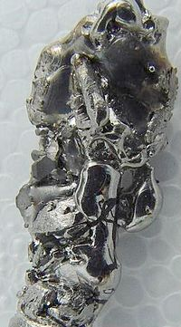

Numero atomico: 22
Massa atomica: 47,87
Temperatura di fusione (°C): 1668
Temperatura di ebolizione (°C): 3287
Energia di prima ionizzazione (kj/mol): 658
Elettronegatività (secondo Pauling): 1,54
Densità: 4,55
Numeri di ossidazione: +2+3+4
Configurazione elettronica: 1s2, 2s2, 2p6, 3s2, 3p6, 3d2, 4s2
Maggiori Informazioni